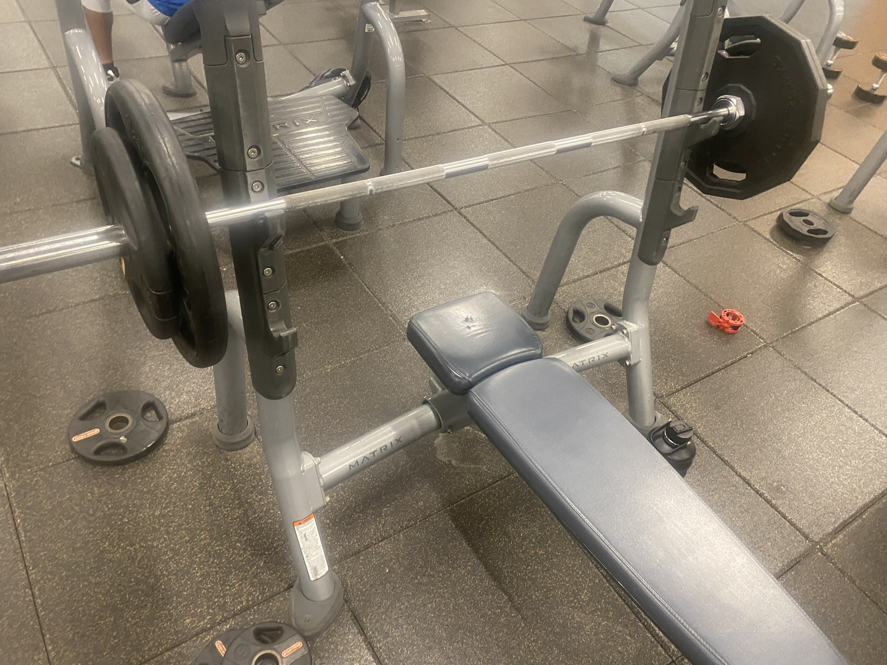
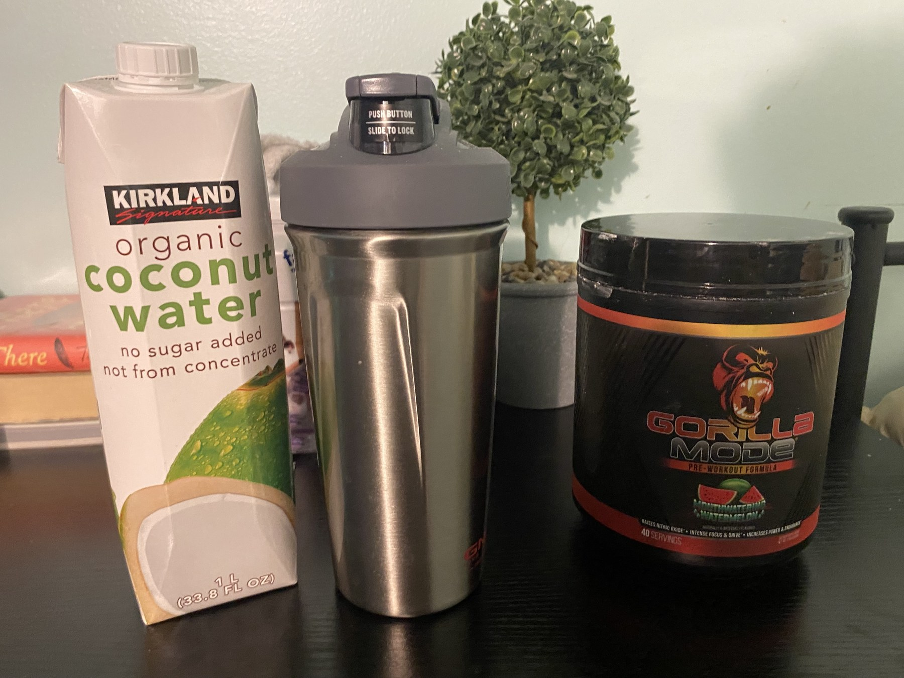

Study the Equipment
Compare gym tools through a bodybuilding-focused lens that values setup, comfort, consistency, and training usefulness.

Bodybuilding Editorial Project
Lifter Association documents bodybuilding through equipment reviews, gym photography, mapped training spaces, and personal writing about the habits that make progress possible.
The site treats the gym as more than a room full of machines. A barbell can tell a story about consistency, a scale can become part of a longer cutting phase, and a juice bar closing early can still become the final scene of a workout day. Our newest addition to the site includes more research links, a stronger footer, a revised review layout, and a visual essay that follows an upper-body session from first setup to post-workout plans.
Pathways Through the Site
Compare gym tools through a bodybuilding-focused lens that values setup, comfort, consistency, and training usefulness.

Use the map to see how training areas, support areas, and small routine checkpoints shape a complete workout environment.

Read about a day in an upper body routine, this includes workouts, thought process, and a peek into how training has evolved for the author personally.